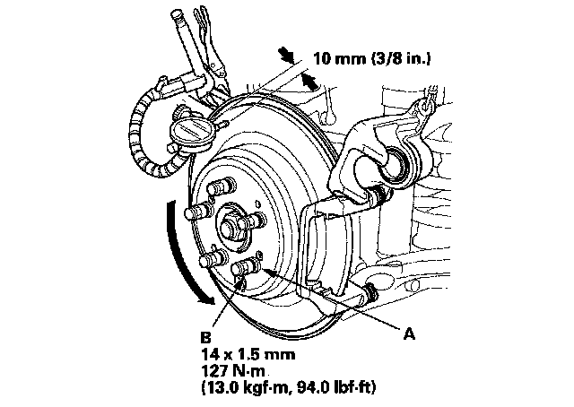
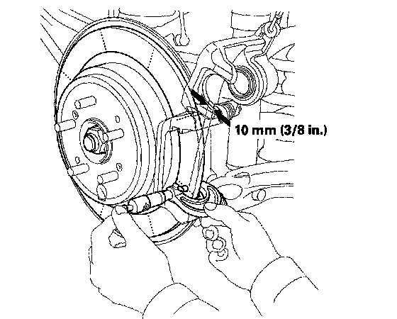

Rear
Rear Brake Disc InspectionRunout
1. Raise the rear of the vehicle, and support it with safety stands in the proper locations.
2. Remove the rear wheels.
3. Remove the brake pads.
4. Inspect the brake disc/drum surface for damage and cracks. Clean the brake disc/drum thoroughly, and remove all rust.
5. Install suitable flat washers (A) and wheel nuts (B), and tighten the wheel nuts to the specified torque to hold the brake disc/drum securely against the hub.

6. Set up the dial gauge against the brake disc/drum as shown, and measure the runout at 10 mm (3/8 in.) from the outer edge of the brake disc/drum.
Brake disc/drum runout:
Service limit: 0.10 mm (0.004 in.)
7. If the brake disc/drum is beyond the service limit, refinish the brake disc/drum with an on-car brake lathe. The Kwik-Lathe produced by Kwik-Way Manufacturing Co. and the "Front Brake Disc Lathe" offered by Snap-on Tools Co. are approved for this operation.
Maximum refinishing limit: 9.0 mm (0.35 in.)
NOTE:
^ If the brake disc/drum is beyond the service limit for refinishing, replace it.
^ A new brake disc/drum should be refinished if its runout is greater than 0.10 mm (0.004 in.).
Thickness and Parallelism
1. Raise the rear of the vehicle, and support it with safety stands in the proper locations.
2. Remove the rear wheels.
3. Remove the brake pads.
4. Using a micrometer, measure the brake disc/drum thickness at eight points, about 45° apart and 10 mm (3/8 in.) in from the outer edge of the brake disc/drum. Replace the brake disc/drum if the smallest measurement is less than the maximum refinishing limit.
Brake disc/drum thickness:
Standard: 10.9-11.1 mm (0.43-0.44 in.)
Maximum refinishing limit: 9.0 mm (0.35 in.)
Brake disc/drum parallelism: 0.015 mm (0.0006 in.) max.
NOTE: This is the maximum allowable difference between the thickness measurements.

5. If the brake disc/drum is beyond the service limit for parallelism, refinish the brake disc/drum with an on-car brake lathe. The Kwik-Lathe produced by Kwik-Way Manufacturing Co. and the "Front Brake Disc Lathe" offered by Snap-on Tools Co. are approved for this operation.
NOTE: If the brake disc/drum is beyond the service limit for refinishing, replace it. Remove the following items:
^ Rear brake caliper bracket.
^ Rear brake disc/drum.